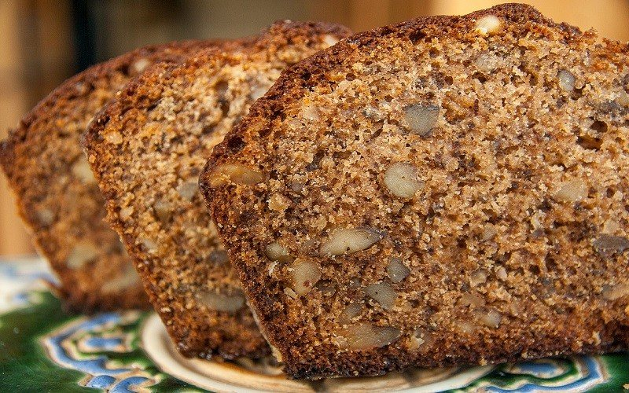

Doces · Tortas e bolos
Bolo de especiarias

Ingredientes
- 2 xícaras de farinha de trigo
- 1 xícara de açúcar
- 1 colher de fermento em pó
- 1 colher (chá) de sal
- ½ colher (chá) de bicarbonato de sódio
- ½ colher (sopa) de cravo-da-índia em pó
- 1 colher (sopa) de canela em pó
- ½ xícara de margarina
- ¾ xícara de açúcar mascavo
- 1 xícara de creme de leite azedado com 1 colher (sopa) de suco de limão
- 3 ovos
- ½ xícara de nozes picadas
Modo de preparo
- Preaqueça o forno em temperatura média (180 °C). Numa tigela, coloque a farinha de trigo, o açúcar, o fermento, o sal, o bicarbonato, o cravo e a canela. Misture bem.
- Adicione a margarina, o açúcar mascavo e o creme de leite. Misture até a farinha ficar úmida.
- Bata na batedeira por 2 minutos em velocidade média. Adicione os ovos e bata por mais 2 minutos. Retire da batedeira, junte as nozes e misture.
- Coloque a massa numa fôrma para bolo inglês de 7,5 x 12 x 25 cm, untada com margarina e polvilhada com farinha de trigo. Asse no forno preaquecido até o bolo ficar macio (30 a 35 minutos). Retire do forno, deixe esfriar por 10 minutos e desenforme. Deixe esfriar completamente e congele.
Observação
Os bolos congelam melhor sem cremes, recheios de geleias ou glacês de açúcar, embora os decorados ou recheados com glacê à base de manteiga possam ser congelados antes de serem embalados. Congelamento: cubra o bolo com plástico e leve ao freezer até congelar; embrulhe em papel-alumínio ou em filme plástico e, depois, coloque num saco plástico; retire o ar, vede bem, etiquete e congele. Descongelamento: em temperatura ambiente por 2 horas, no forno por 10 minutos ou no micro-ondas por 3 minutos na potência de descongelamento.